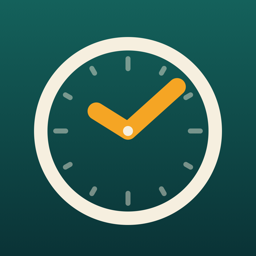
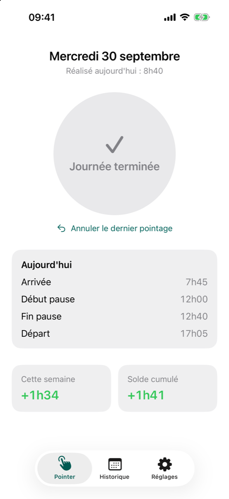
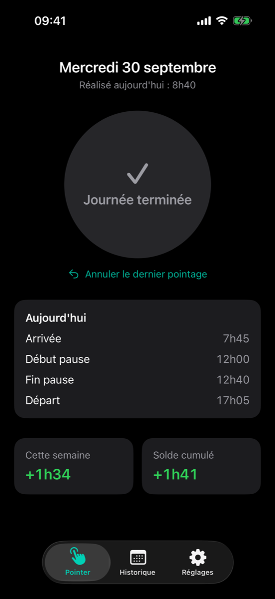
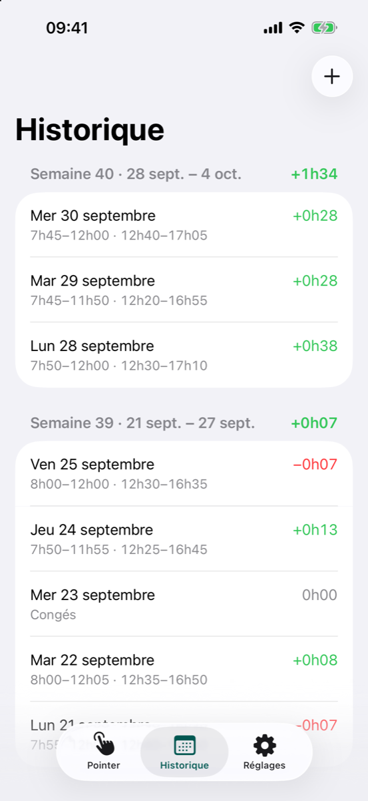

Un bouton pour pointer ses heures de travail, et les soldes de la semaine et du mois toujours à jour.
En test sur TestFlight


Le deuxième appui est le seul ambigu, départ ou début de pause : l'app le tranche d'elle-même, selon le nombre de pointages de la journée.
| Pointages | Lecture |
|---|---|
| 1 | arrivée, journée en cours |
| 2 | arrivée et départ, sans pause |
| 3 | arrivée, début et fin de pause, journée en cours |
| 4 | journée complète |
Pointage calcule exactement comme TimeTracker, l'outil en ligne de commande qui produit le bilan en Markdown et en PDF. Les deux partagent leurs cas de test. L'app exporte et importe le même fichier releve.md :
---
duree_journee: 8h12
pause_minimum: 0h30
seuil_pause: 5h00
tolerance: 10h00
---
|Date|Arrivée|Début pause|Fin pause|Départ|Absence|
|---|---|---|---|---|---|
|29.9.2026|7h45|11h50|12h20|16h55||
|30.9.2026|7h45|12h00|12h40|17h05||